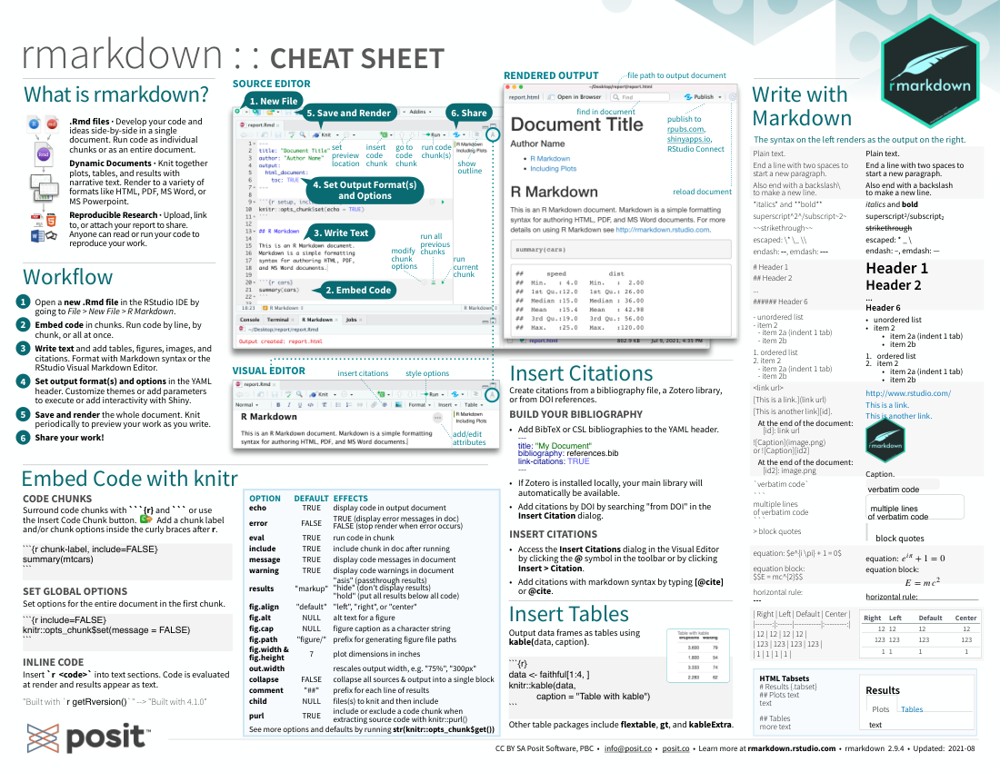
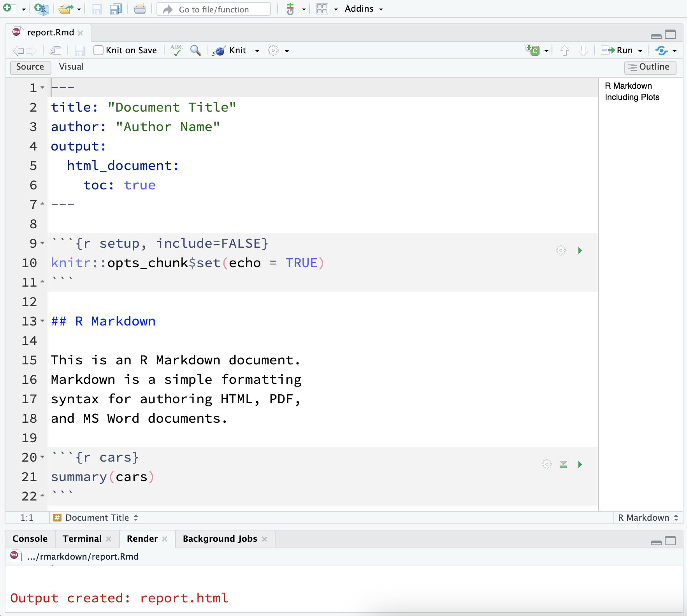
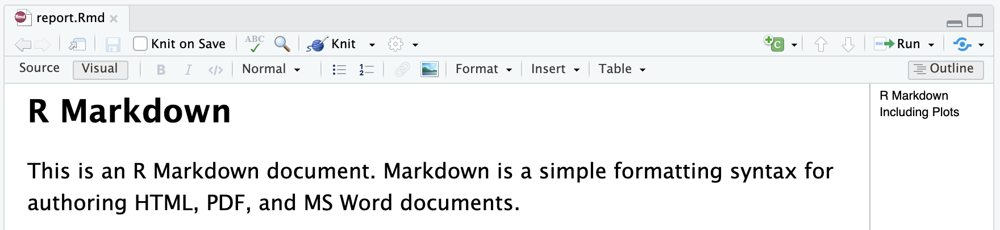
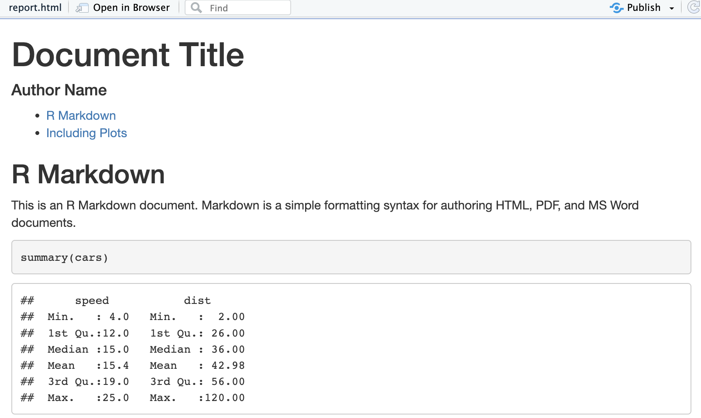

Download PDF
Translations (PDF)
Open a new .Rmd file in the RStudio IDE by going to File > New File > R Markdown.
Embed code in chunks. Run code by line, by chunk, or all at once.
Write text and add tables, figures, images, and citations. Format with Markdown syntax or the RStudio Visual Markdown Editor.
Set output format(s) and options in the YAML header. Customize themes or add parameters to execute or add interactivity with Shiny.
Save and render the whole document. Knit periodically to preview your work as you write.
Share your work!



Surround code chunks with ```{r} and ``` or use the Insert Code Chunk button. Add a chunk label and/or chunk options inside the curly braces after r.
{{{r chunk-label, include = FALSE}}}
Set options for the entire document in the first chunk.
{{{r include = FALSE}}} knitr::opts_chunk$set(message = FALSE)
Insert `r <code>` into text sections. Code is evaluated at render and results appear as text.
The markdown text
Built with `r getRversion()` will render as “Built with 4.3.0” in the output file.
| Option | Default | Effects |
|---|---|---|
echo |
TRUE |
display code in output document |
error |
FALSE |
TRUE (display error messages in doc), FALSE (stop render when error occurs) |
eval |
TRUE |
run code in chunk |
include |
TRUE |
include chunk in doc after running |
message |
TRUE |
display code messages in document |
warning |
TRUE |
display code warnings in document |
results |
"markup" |
"asis" (pass through results), "hide" (don’t display results), "hold" (put all results below all code) |
fig.align |
"default" |
"left", "right", or "center" |
fig.alt |
NULL |
alt text for a figure |
fig.cap |
NULL |
figure caption as a character string |
fig.path |
"figure/" |
prefix for generating file paths |
fig.width & fig.height |
7 |
plot dimensions in inches |
out.width |
rescales output width, e.g. "75%", "300px" |
|
collapse |
FALSE |
collapse all sources & output into a single block |
comment |
"##" |
prefix for each line of results |
child |
NULL |
file(s) to knit and then include |
purl |
TRUE |
include or exclude a code chunk when extracting source code with knitr::purl() |
See more options and defaults by running str(knitr::opts_chunk$get())
Create citations from a bibliography file, a Zotero library, or from DOI references.
Add BibTex or CSL bibliographies to the YAML header.
If Zotero is installed locally, your main library will automatically be available.
Add citations by DOI by searching “from DOI” in the Insert Citation dialog.
[@cite] or @cite.Output data frames as tables using kable(data, caption).
``` {{r}}
data <- faithful[1:4,]
knitr::kable(data, caption = "Tables with kable")
```Other table packages include flextable, gt, and kableExtra.
The syntax on the left renders as the output on the right.
Markdown Syntax |
Rendered OutputPlain text. |
||||||||||||||||
|
End a line with two spaces to start a new paragraph. |
||||||||||||||||
|
Also end a line with a backslash to make a new line. |
||||||||||||||||
|
italics and bold | ||||||||||||||||
|
superscript2 /subscript2 | ||||||||||||||||
|
|||||||||||||||||
|
escaped: * _ \ | ||||||||||||||||
|
en dash: –, em dash: — | ||||||||||||||||
|
Header 1 |
||||||||||||||||
|
Header 2 |
||||||||||||||||
|
… | ||||||||||||||||
|
Header 6 |
||||||||||||||||
|
|
||||||||||||||||
|
|
||||||||||||||||
|
https://posit.co/ | ||||||||||||||||
|
This is a link. | ||||||||||||||||
|
This is another link. | ||||||||||||||||
|
|||||||||||||||||
|
verbatim code |
||||||||||||||||
|
|
||||||||||||||||
|
|
||||||||||||||||
|
equation: \(e^{i \pi} + 1 = 0\) | ||||||||||||||||
|
equation block: \[ E = mc^{2} \] |
||||||||||||||||
|
horizontal rule: |
||||||||||||||||
|
|
||||||||||||||||
HTML Tabsets |
Use the document’s YAML header to set an output format and customize it with output options. Indent format 2 characters, indent options 4 characters.
---
title: "My Document"
author: "Author Name"
output:
html_document:
toc: true
toc-location: left
---| Output Format | Creates |
|---|---|
html_document |
.html |
pdf_document1 |
|
word_document |
Microsoft Word (.docx) |
powerpoint_presentation |
Microsoft PowerPoint (.pptx) |
odt_document |
OpenDocument Text |
rtf_document |
Rich Text Format |
md_document |
Markdown |
github_document |
Markdown for Github |
ioslides_presentations |
ioslides HTML slides |
slidy_presentation |
Slidy HTML slides |
beamer_presentation2 |
Beamer slides |
Also see flexdashboard, bookdown, distill, and blogdown.
| Important Options | Description | HTML | MS Word | MS PPT | |
|---|---|---|---|---|---|
| anchor_sections | Show section anchors on mouse hover (TRUE or FALSE) | X | |||
| citation_package | The LaTeX package to process citations (“default”, “natbib”, biblatex”) | ||||
| code_download | Give readers an option to download the .Rmd source code (TRUE or FALSE) | X | |||
| code_folding | Let readers toggle the display of R code (“none”, “hide”, or “show”) | X | |||
| css | CSS or SCSS file to use to style the document (e.g. “style.css”) | X | |||
| dev | Graphics device to use for figure output (e.g. “png”, “pdf”) | X | X | ||
| df_print | Method for printing data frames (“default”, “kable”, “tibble”, “paged”) | X | X | X | X |
| fig_caption | Should figures be rendered with captions (TRUE or FALSE) | X | X | X | X |
| highlight | Syntax highlighting (“tango”, “pygments”, “kate”, “zenburn”, “textmate”) | X | X | X | |
| includes | File of content to place in doc (“in_header”, “before_body”, “after_body”) | X | X | ||
| keep_md | Keep the Markdown .md file generated by knitting (TRUE or FALSE) | X | X | X | X |
| keep_tex | Keep the intermediate TEX file used to convert to PDF (TRUE or FALSE) | X | |||
| latex_engine | LaTeX engine for producing PDF output (“pdflatex”, “xelatex”, or “lualatex”) | X | |||
| reference_docx/_doc | docx/pptx file containing styles to copy in the output (e.g. “file.docx”, “file.pptx”) | X | X | ||
| theme | Theme options (see Bootswatch and Custom Themes below) | X | |||
| toc | Add a table of contents at start of document (TRUE or FALSE) | X | X | X | X |
| toc_depth | The lowest level of headings to add to table of contents (e.g. 2, 3) | X | X | X | X |
| toc_float | Float the table of contents to the left of the main document content (TRUE or FALSE) | X |
Use ?<output_format> to see all of a format’s options, e.g. ?html_document
Parameterize your documents to ruse with new inputs (e.g. data, values, etc.).
Add parameters in the header as sub-values of params.
Call parameters in code using params$name.
``` {{r}}
data <- df[,params$state]
summary(data)
```Set parameters with Knit with Parameters or the params argument of render().
Create a new package with an inst/rmarkdown/templates directory.
Add a folder containing template.yaml (below) and skeleton.Rmd (template contents).
Install the package to access template by going to File > New R Markdown > From Template.
Customize HTML documents with Bootswatch themes from the bslib package using the theme output option. Use bslib::bootswatch_themes() to list available themes.
Customize individual HTML elements using bslib variables. Use ?bs_theme to see more variables.
More on bslib at https://pkgs.rstudio.com/bslib/.
Add CSS and SCSS to your documents by adding a path to a file with the css option in the YAML header.
Apply CSS styling by writing HTML tags directly or:
Use markdown to apply style attributes inline.
Bracketed Span
A [green]{.my-color} word. will render as “A green word.”
Fenced Div
:::{.my-color}
All of these words
are green
:::will render as
All of these words
are green.
Use the Visual Editor. Go to Format > Div/Span and add CSS styling directly with Edit Attributes.
Turn your report into an interactive Shiny document in 4 steps:
Add runtime: shiny to the YAML header.
Call Shiny input functions to embed input objects.
Call Shiny output functions to embed reactive output.
```{{{r echo = FALSE}}} numericInput(“n”, “How many cars?”, 5)
renderTable({ head(cars, input$n) }) ```
Render with rmarkdown::run() or click Run Document in RStudio IDE.
Also see Shiny Prerendered for better performance. https://rmarkdown.rstudio.com/authoring_shiny_prerendered.
Embed a complete Shiny app into your document with shiny::shinyAppDir(). More at https://bookdown.org/yihui/rmarkdown/shiny-embedded.html.
When you render a document, rmarkdown:
Save, then Knit to preview the document output. The resulting HTML/PDF/MS Word/etc. document will be created and saved in the same directory as the .Rmd file.
Use rmarkdown::render() to render/knit in the R console. See ?render for available options.
Publish on Posit Connect to share R Markdown documents securely, schedule automatic updates, and interact with parameters in real-time. https://posit.co/products/enterprise/connect/.
CC BY SA Posit Software, PBC • info@posit.co • posit.co
Learn more at rmarkdown.rstudio.com.
Updated: 2023-06.